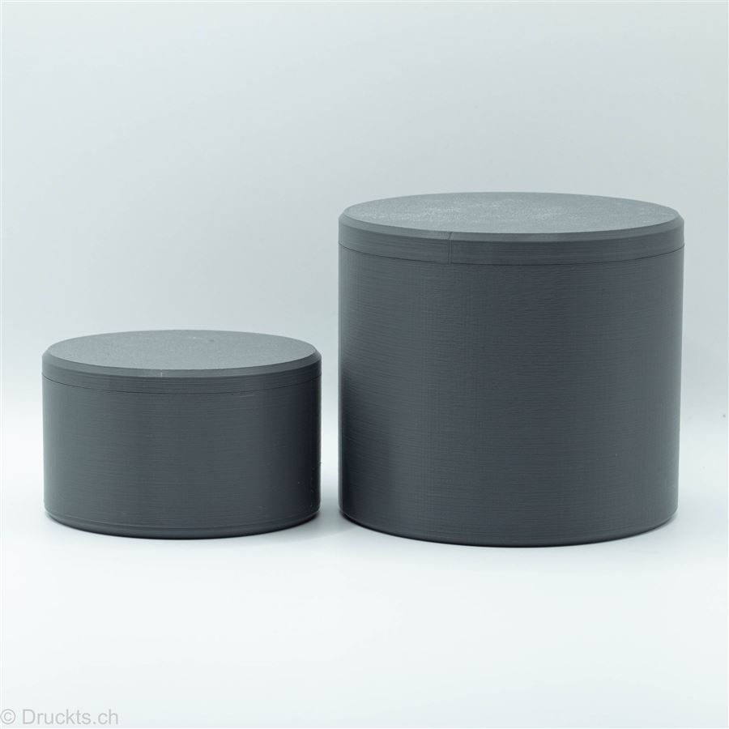
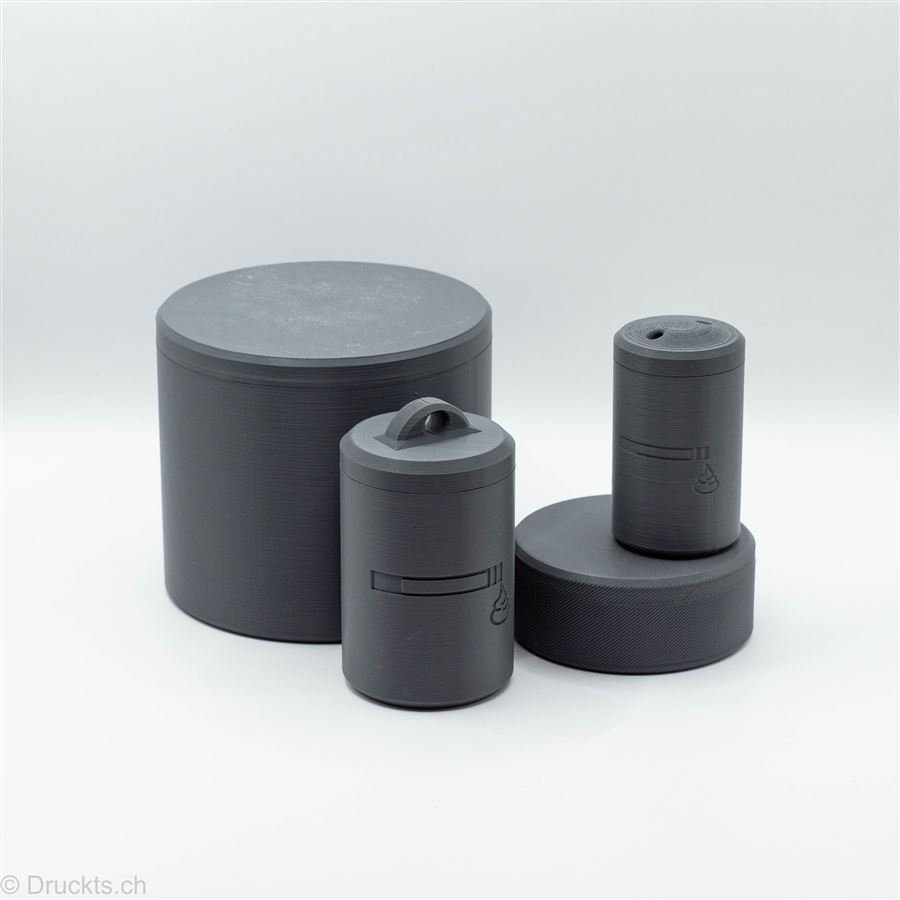

Adventurer
Der Begleiter für jedes Abenteuer: dicht schliessender Deckel mit Henkel – einfach an Rucksack oder Schlüsselbund hängen.
Für unterwegsProdukte · Sortiment
Sechs Modelle, ein Prinzip: Asche bleibt drin, Natur bleibt sauber. Alle aus nachhaltigem PLA, gedruckt mit Solarstrom in Winterthur.
Der Begleiter für jedes Abenteuer: dicht schliessender Deckel mit Henkel – einfach an Rucksack oder Schlüsselbund hängen.
Für unterwegs
Der schlanke Taschenascher mit verschliessbarem Deckel – unauffällig in Jacke oder Hosentasche, mit eingraviertem Logo.
Für unterwegs
Das grösste Modell für unterwegs: viel Volumen und ein sicher schliessender Deckel – ideal für lange Touren und Festivals.
Für unterwegs
Flach wie ein Eishockey-Puck: der dezente Tischascher mit herausnehmbarem Einsatz und Ablagekerben.
Für zuhause
Der Klassiker für Balkon und Garten – mit abnehmbarem Einsatz, der Wind und Blicke fernhält.
Für zuhause
Die grosse Version mit Deckel: schliesst Gerüche zuverlässig ein und macht auf jedem Tisch eine gute Figur.
Für zuhause
Das Trio für unterwegs: Explorer, Adventurer und Traveler im Set – für jede Tour der passende Begleiter.
Set
Das Duo für zuhause – drinnen wie draussen immer ein sauberer Platz für die Asche.
Set
Die ganze Familie in einem Set – für alle, die sich nicht entscheiden wollen.
SetSchreib uns, welches Modell du möchtest – Preise und Farben erfährst du auf Anfrage. Wir melden uns meist innert 1–2 Werktagen.
Jetzt anfragen